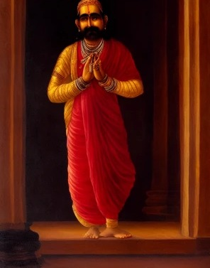
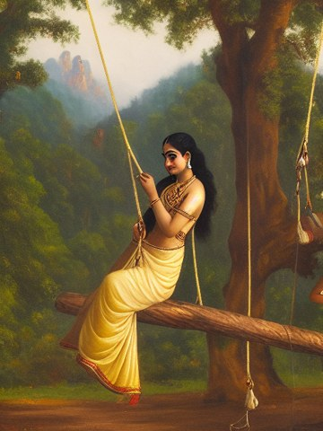
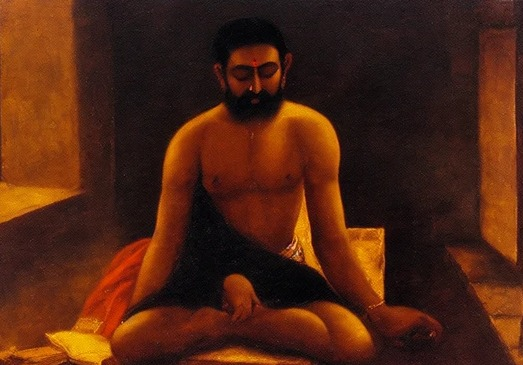
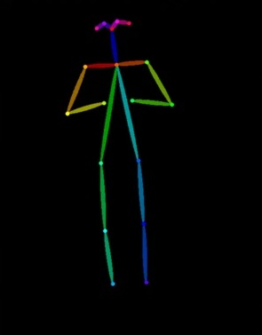
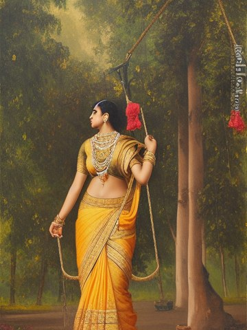
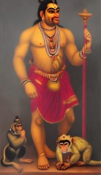
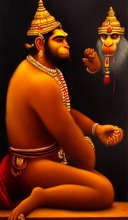
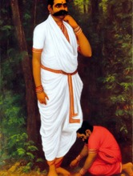
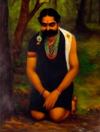
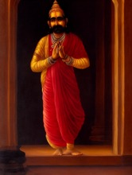

Commission a painting in two lines
Words choose the scene. An optional photo chooses the pose.
THE SCENE
“Vibhishana standing with folded hands, asking Rama for refuge”

the pose (optional)
any phone photo of a person posing
⟶

Vibhishana seeks refugegenerated by our system · 2026
Four rooms, four milestones
Stable Diffusion 1.5 · everything trained and run on a free Colab T4 GPU

I · The Collection61 oil paintings, captioned by Qwen3-VL

II · The Stylea 3 MB LoRA on frozen SD 1.5

III · The WordQwen2.5 prompt expansion, best of four

IV · The PoseOpenPose + ControlNet, web app
Teaching the brushwork
A 3 MB LoRA: W′ = W + B·A on the attention layers, rank 4 · Stable Diffusion 1.5 stays frozen

His originalheld out, never trained on

“STYLE OF RAVI VARMA”
OUR LORA
Same caption, re-paintedprompting alone → a print · our LoRA → oil
THE STYLE RULER
similarity to the 9 unseen paintings (CLIP ViT-L/14)
0.70
0.75
0.80
0.85
base SD
0.731
“Ravi Varma” prompt
0.790
our LoRA
0.816
his paintings
0.839
Words alone vs words + a pose
Same prompt and seeds · 8 pose photos × 2 seeds, no hand-picking


TEXT ONLY
+ POSE


TEXT ONLY
+ POSE


TEXT ONLY
+ POSE
10% → 97%
of the pose's joints land in the right place (PCK@0.1)
no loss
scene match 28.2 → 28.6
−0.02
style 0.834 → 0.815
Now showing · the studio
LIVE DEMO · TEXT TO PAINTING

Now showing · pose control
LIVE DEMO · PHOTO TO POSE

❧